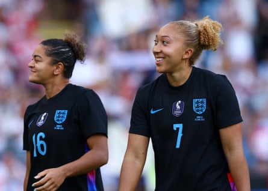

England have far trickier tests ahead of them when they kick off their European Championship title defence in Zurich against France in six days’ time, but they put on a thrilling show for the fans who came to wave them off in Leicester, with a 7-0 win against Jamaica.
This was Sarina Wiegman’s final opportunity to see her team in front of fans and with tournament conditions in place before they head to Switzerland to defend their 2022 crown, and although it was a dress rehearsal the signs were good. Ella Toone stepped up, scoring twice, Lauren James returned to action and provided an assist within eight minutes, there was a cohesiveness to England’s play and the substitutes made an impact.
“We know next week we have to take our game to the next level,” said Wiegman afterwards.
The noise was deafening before kick-off; fans in the Midlands, and those travelling from further afield, had read loud and clear the message that this was a sendoff game.
There had been some theorising over what sort of starting XI Wiegman would choose for the visit of Jamaica. Would this be the opportunity to give those on the fringes a final chance to impress, or would it be much closer to the likely starting XI for England’s Euro 2025 opener against France?
It was, in reality, always going to be the latter. Given a tough group, with no easy games, this was England’s chance to warm up into competition mode.
Jess Carter was given the nod over Niamh Charles at left-back, Beth Mead started ahead of Chloe Kelly and Toone beat Grace Clinton to fill the No 10 role. It would be remiss to not expect some tweaks for the game against France – James starting on the bench was down to her return from injury, for example – but they will be minimal.
Lauren James was pleased to be back with the Lionesses after recovering from injury.Photograph: Andrew Boyers/Action Images/Reuters
“We’re still building her,” said Wiegman of James’s return. “ She worked so hard to be where she is right now … This is the first time she could get minutes, we hope we can keep building her and then go again into France.”
Toone repaid the faith of the manager within 10 minutes, the midfielder collecting the loose ball after it was forced from the feet of Georgia Stanway and curling into a corner from the edge of the D. After opening the scoring the 25-year-old poignantly kissed her hands and pointed to the sky, a tribute to her father, who died in September.
There was always going to be a big gulf between these two teams: the European champions ranked fifth in the world, and Jamaica ranked 35 places below them. Emblematic of that gap was the 20-year-old Liya Brooks, the goalkeeper being one of four members of the Jamaica squad who play for a university team in the US.
England were stunned 10 minutes later, though, when Kayla McKenna swept in past Hannah Hampton from a corner, with a deflection off Alex Greenwood wrongfooting the keeper. However, with the video assistant referee system in use to get the Lionesses ready for tournament conditions, McKenna’s effort was ruled out, as Kalyssa van Zanten was in an offside position and interfering with Hampton’s line of sight.
Their one-goal advantage still in place, England’s second was inevitable and Carter was the architect, her cross from the left finding Lucy Bronze in the middle and the 33-year-old heading in. Toone added the third, Bronze battling the ball to her before she curled it into a corner.
England’s dominance continued into the second half and the fourth goal came just before the hour, when Stanway fired in after a string of shots were blocked by the visitors. Changes came soon after, with Esme Morgan, Kelly and James on.
The sight of James back on the pitch was welcome, making her first appearance since April after her recovery from a hamstring injury. She came on in the No 10 position, something Wiegman said they had wanted to experiment with.
“We know that we have some players that can play in different positions, we know that LJ has played a lot up front, on the sides, she can play there too,” she said. “That’s what I wanted to see today and see how that worked. I think it went really well.”
This was the time to get any rustiness out of her system but it turned out she didn’t need long: her clipped effort to the far post was pinpoint and all Alessia Russo had to do was nod her head forward slightly to convert. From there on out, James was a livewire.
Charles, Clinton and Aggie Beever-Jones were given a chance to show what they can do with 15 minutes remaining and the subs inspired the sixth. Williamson’s ball from deep was met by Charles, who sent it into the middle for Beever-Jones to turn in, and Kelly set up Mead in added time, the forward firing in shortly after she had been down with a worrying-looking knock to a knee.
Jamaica are not of the level of the victors’ Group D opponents France or the Netherlands, or Wales for that matter, but the Lionesses did the job that was in front of them. This was a mature England, a confident England and an increasingly tournament-ready England.